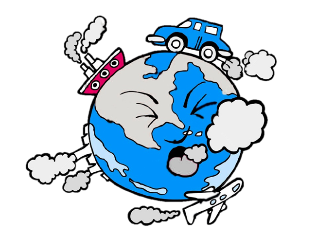

|
ENVIVALION |
|
|
ENVIVALION |
La contaminación ambiental es la presencia de sustancias o elementos dañinos para los seres humanos y los ecosistemas (seres vivos). Existen diferentes tipos de contaminación, pero básicamente se pueden dividir en: contaminación del aire, contaminación de suelos (tierra) y contaminación del agua.
|
Contaminación del agua Se define como la acumulación de una o más sustancias ajenas al agua que pueden generar una gran cantidad de consecuencias, entre las que se incluye el desequilibrio en la vida de los seres vivos (animales, plantas y personas). |
Existen diversas causas de contaminación del agua y para distinguirlas en dos grupos podemos mencionar la contaminación natural y la contaminación artificial.
En relación a nuestras actividades, la que nos interesa mencionar es la contaminación artificial, ya que aparece cuando las personas interactuamos con el medio ambiente. En general la asociamos a vertederos de aguas residuales y de las industrias, así como el uso de pesticidas y fertilizantes tóxicos.
Contaminación de los suelos
|
La contaminación del suelo es una alteración del suelo por la presencia de sustancias químicas producidas por el hombre. En otras palabras, es la degradación o destrucción de la superficie y del suelo como resultado de la acción directa o indirecta de los seres humanos. Un suelo contaminado también podrá contaminar el aire y el agua, expandiendo así el rango de afección. |
|
Contaminación atmosférica La contaminación atmosférica consiste en la presencia de materias o formas de energía en el aire que pueden suponer un riesgo, daño o molestia de diferente gravedad para los seres vivos Entre las consecuencias directas de la contaminación atmosférica, se podría destacar el desarrollo de enfermedades y afecciones en los seres humanos y la biodiversidad, así como la pérdida de visibilidad en zonas de grandes concentraciones o la aparición de olores desagradables. |
 |
La producción, el desarrollo del transporte y el uso de a partir de la Revolución Industrial ha disparado los niveles de dióxido de carbono y otros gases contaminante en la atmósfera. Esto ha provocado que la contaminación en el aire sea ya un problema ambiental global.
Leer más sobre:
|
Vida Más Verde |
Energía Renovable |
Calentamiento Global |